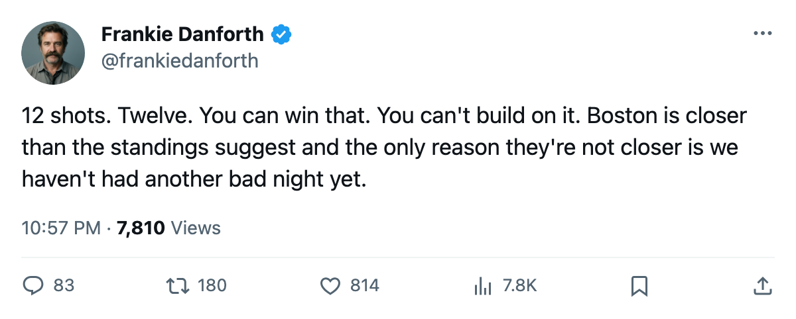

DANFORTH: Code Yellow, 12 shots, and a 32-point lead with a game attached to the other side
The overtime win at Ottawa gets 2 points and a diagnosis nobody in the building is naming out loud.
 Frankie DanforthColumnist · Queen City Telegram
Frankie DanforthColumnist · Queen City Telegram
Code Yellow

12 shots. The  Toronto Maple Leafs fired 12 pucks at
Toronto Maple Leafs fired 12 pucks at  Ottawa Senators's net Thursday night and won 4-3 in overtime. Ottawa put up 58. I'll take the 2 points. I'll take them, tape them to the fridge, and try not to look at the shot counter every time I open it.
Ottawa Senators's net Thursday night and won 4-3 in overtime. Ottawa put up 58. I'll take the 2 points. I'll take them, tape them to the fridge, and try not to look at the shot counter every time I open it.
Less than a quarter of the pressure was Toronto's. You can call it a win but the shot totals say it was a game where the Leafs stayed in it on luck and overtime.  Boston Bruins sits at 29 points in 20 games, Toronto at 32 in 21, and the Bruins own the season series 2-0-0. If Boston wins that game in hand, the standings show a gap you can cross in a weekend, and the tiebreaker already belongs to the Bruins. That means a 32-point team isn't safe until it's at 35, 36, 38. Every 12-shot night eats into a cushion that isn't there yet.
Boston Bruins sits at 29 points in 20 games, Toronto at 32 in 21, and the Bruins own the season series 2-0-0. If Boston wins that game in hand, the standings show a gap you can cross in a weekend, and the tiebreaker already belongs to the Bruins. That means a 32-point team isn't safe until it's at 35, 36, 38. Every 12-shot night eats into a cushion that isn't there yet.
The month without the 99
 Marian Gaborik99 has been on the shelf since between November 16 and 17 with a leg injury. He doesn't come back until December 25. The Bureau's Index has him at +11 on a 99 overall, the highest form term on the Leafs' side of the ledger. The $11.90M contract sits in the press box for 17 more games and whatever follows. Toronto scored 4 in each of its last two wins, and one of them came on 12 shots against a Senators team with 17 points. The engine isn't running. It's idling, and the coach keeps merging onto the highway.
Marian Gaborik99 has been on the shelf since between November 16 and 17 with a leg injury. He doesn't come back until December 25. The Bureau's Index has him at +11 on a 99 overall, the highest form term on the Leafs' side of the ledger. The $11.90M contract sits in the press box for 17 more games and whatever follows. Toronto scored 4 in each of its last two wins, and one of them came on 12 shots against a Senators team with 17 points. The engine isn't running. It's idling, and the coach keeps merging onto the highway.
 Stanislav Chistov92 is +8 on the Index, a 78 base reading 87.
Stanislav Chistov92 is +8 on the Index, a 78 base reading 87.  Rick Nash85 is +7, a 77 reading 85. Petr Chlup92 has 15 points in 21 games at 19 years old and 20.7 minutes a night. The young players are carrying their share. But a team missing its best forward needs everyone else to find another 6 shots a game, and right now they can't find 4.
Rick Nash85 is +7, a 77 reading 85. Petr Chlup92 has 15 points in 21 games at 19 years old and 20.7 minutes a night. The young players are carrying their share. But a team missing its best forward needs everyone else to find another 6 shots a game, and right now they can't find 4.
The window that closes in 11 days
Washington tonight at 19 points. Philadelphia Tuesday at 23. Buffalo Wednesday at 16. Tampa Bay Saturday at 25. The Islanders the following Tuesday at 23. Five opponents, all at or below .500. Toronto Maple Leafs holds the division's best home record, 10-4, and the second-best road record, 6-1. This stretch is the one the schedule hands you a win in. Washington is 4-8 on the road. Buffalo is 3-8. These are not teams that should take points from you in your own building.
If the Leafs can't put 30 on Washington's net tonight, they won't put 30 on Buffalo's Saturday. And if they can't, they're asking for another 12-shot night, another overtime, another lottery.  Roberto Luongo95 won the Conn Smythe and the Jennings last season. He shouldn't have to win another one on a night where his team fires 12 pucks and hopes.
Roberto Luongo95 won the Conn Smythe and the Jennings last season. He shouldn't have to win another one on a night where his team fires 12 pucks and hopes.
The gap between 32 and 29 is a weekend. Boston has a game in hand, owns the head-to-head, and is on a 3-game win streak while Toronto is on 2. The Bruins don't need to outplay you. They need you to have three more of these 12-shot nights and they'll pass you by December 10.
Code Yellow. The points are there but the process can't keep up with them.
The Panic Meter: Code Yellow, level 2. Two straight wins, the division lead, and a shot generation problem that a 99-overall winger on the shelf is exposing. If the shot totals stay south of 25 against Washington and Buffalo, this goes Orange before the weekend.
